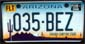
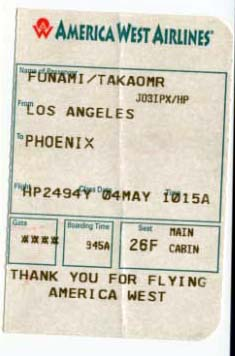
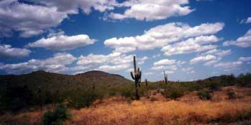
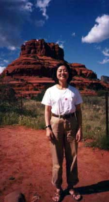
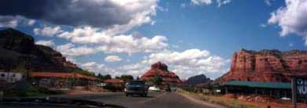

セドナ日記 〜 第１日目 98.5.4
フェニックスからレンタカーでセドナへ
前日、成田からノースウエストでロサンゼルスに入った。その日は友人宅に泊り、今日は朝からアメリカウエストという航空会社でフェニックスに移動する。エルニーニョのせいで、LAは例年に比べて雨が多かったのだが、空から見ていると、突然雲がきれ、砂漠状態になってしまった。 1時間ほどで、フェニックスに到着。
ここからは、レンタカーを借りることにする。
実は、海外でレンタカーを自分で借りて運転するのは始めての経験で、うまく借りれるかどうかとても心配だった。日本で予約してこなかったことを悔やんだ。（日本を出発するのが日曜日のため予約できなかった）
僕自身の英語力というのは、何となく通じてしまうのだが、細かいところが話せないというタイプで、友達とどうでもいい話しをしている分には問題ないが、お金のはなしとか、待ち合わせの細かい指定とかは、いつも良くわからなくなってしまう。 しかし、今回同行している千穂は、カナダ留学の経験もあり、英語は問題ない。 レンタカーの申し込みに関しても、彼女にヘルプしてもらえるので何とかなった。 手荷物を受け取るとすぐレンタカーのカウンターがあった。８社位あったと思う。 通（旅行の達人）ならここで、安くて評判のいい地元の業者を選ぶのだろうが、良くわからない日本人２人の僕らは、何となく安心そうな、Hertzを選んだ。（費用は最終的には4日+2時間でLDW,LIS,TAXこみで365.82USDだった。）他の会社と比べて、安いのかどうか結局調べずじまいだったが、セドナの町に行くのも、行ってからも、車があって本当に便利だった（と言うより無しではやってけない）ので、妥当な線だったと納得している。
手続きを無事終え、バスで駐車場へ、鍵をもらってないではないか？と気付いたが、鍵は車についていた。もちろん左ハンドル（つまりは外車ということか...）車である。いろんな人の体験談を参考に僕も「右右は右右」と声にしながら、慎重にスタートする。ハーツでもらった、A3サイズの道路地図を頼りにセドナに向かった。空港からセドナまではいたってシンプルな道のりである。17号線を160Km程北上し、179号線を20Km程でセドナである。 ただ、ちょっと気をつけなければならないのは、空港から17号線に入るまでである。その間一瞬10号線に入るのだが、感覚としては、入ったらすぐ17号線への出口という感じである。僕もこの出口を見失いかけた。
何とかなったが、そのあとの道順は非常に簡単である。 フェニックスの市街地が以外と長く続くが、そこから山（丘陵？）に入る、立派なハイウエィの周りには、絵に書いたようなサボテンが生えており、アリゾナの地にいることを実感させてくれる。 パーキングで一旦休憩をとる。 その後、長ーい下り坂が、とても怖かった。日本の道路に比べて、坂道の作りかたが急だし、長い気がする。 そうこうしているうちに、179号線への出口をでて、いよいよもう少し。こちらは２車線道路。 ここまでは、山も赤いということはなかったのだが、セドナに近づくに連れて、視界に入る山が、赤みを帯びてくる。 そして、ついに、赤い岩山が目の前に見えてきた。 千穂と記念写真をとるが、これが実は「ベルロック」と呼ばれる、ボルテックスだった。 ここまで、空港から約3時間のドライブだった。
それが、ボルテックスとは知らないまま、僕らは、商工会議所を目指す。今日泊まる宿を見つけなければならない。*レンタカー情報＠セドナアップデイツ